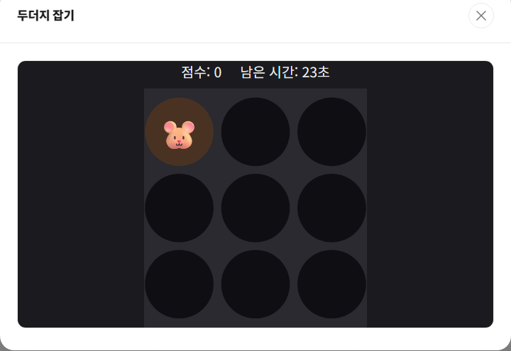

두더지 잡기는 3x3 구멍 중 무작위로 튀어나오는 두더지를 30초 안에 최대한 많이 클릭해서 잡는 반응속도 게임입니다. 규칙이 단순해 누구나 바로 즐길 수 있습니다.

기본 규칙
- 9개의 구멍 중 한 곳에 두더지가 무작위로 나타납니다.
- 두더지가 나온 구멍을 클릭하면 10점을 얻고, 즉시 다른 구멍에서 새 두더지가 나타납니다.
- 점수가 오를수록 두더지가 나타나는 간격이 점점 짧아집니다.
- 제한 시간 30초가 지나면 게임이 종료됩니다.
고득점 요령
1. 손가락(또는 마우스)을 보드 중앙에 대기시키세요
두더지는 9개 구멍 중 어디서든 나올 수 있습니다. 마우스나 손가락을 보드 가장자리가 아닌 중앙 근처에 두면 어느 구멍에 나타나든 이동 거리가 짧아 반응이 빨라집니다.
2. 클릭 후 바로 다음 위치를 예측하지 말고 기다리세요
두더지 등장 위치는 완전히 무작위이기 때문에 "다음엔 여기일 것"이라는 예측은 오히려 반응을 늦출 수 있습니다. 두더지가 실제로 나타난 걸 본 뒤 움직이는 편이 더 정확합니다.
3. 후반부 속도 증가에 미리 대비하세요
점수가 쌓일수록 두더지 등장 간격이 짧아집니다. 게임 중반 이후부터는 클릭 하나하나에 걸리는 시간을 최소화하는 데에 집중해야 막판 속도를 따라갈 수 있습니다.
30초 동안 몇 마리까지 잡을 수 있는지 직접 도전해보고 싶다면 게임 목록에서 두더지 잡기를 플레이해 보세요.